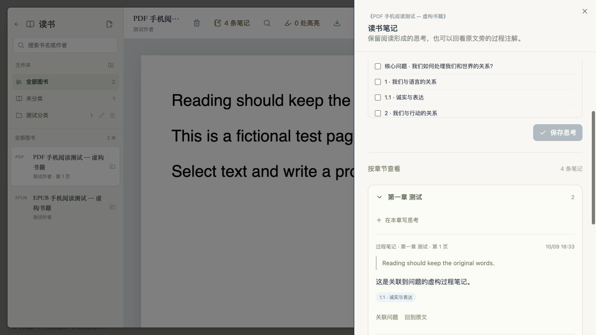
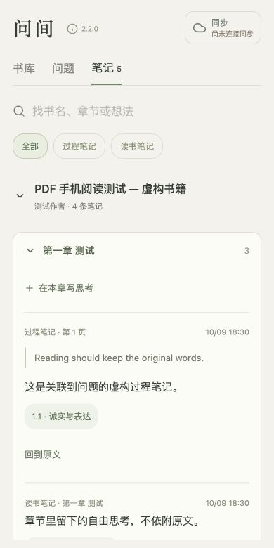
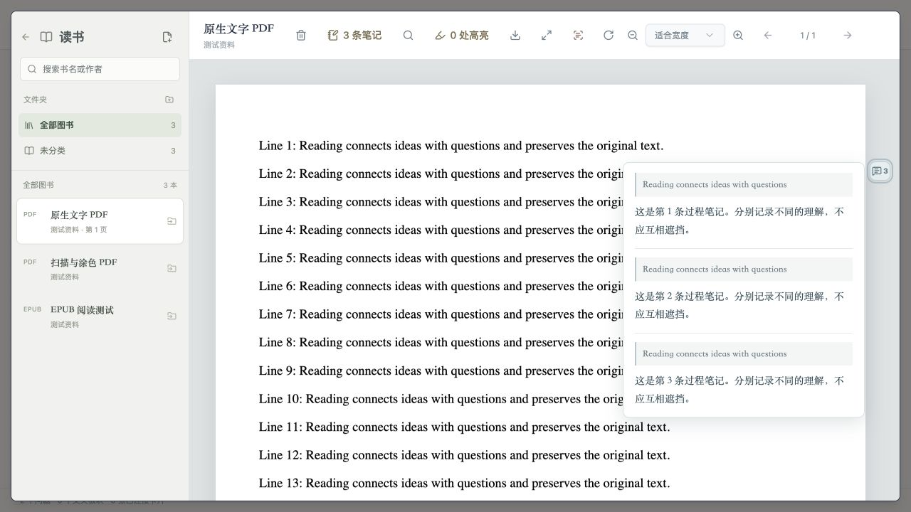

数据在自己手里
问间首先是一个本地应用。账号、云端与订阅都不是使用的前提。
本地优先
笔记、书籍原文件、阅读位置与草稿全部保存在自己的电脑上。未配置同步时，不产生任何网络上传。
无需账号
不注册、不登录、不收集使用数据。安装即可使用，打开速度与离线环境不受网络影响。
自主同步
需要多端时，连接你自己的坚果云或阿里云 OSS。凭证加密保存在系统安全存储中，随时可以断开。
它适合谁
问间围绕一种特定的使用方式设计。明确边界，便于判断是否合适。
适合这样的使用者
- 围绕少数长期问题持续思考，并希望保留思考的来源与形成过程
- 大量阅读 PDF / EPUB，需要摘录、批注与读后整理
- 希望笔记数据完整保存在自己手里，可随时整体备份与恢复
- 需要在电脑与手机之间续用同一套资料与阅读位置
不太适合这样的场景
- 需要多人实时协作编辑同一份文档的团队
- 希望完全在浏览器中即开即用、不安装软件的用户
- 以手机为主要创作设备的用户（移动版以阅读与笔记为主）
- 需要开放插件生态与高度定制界面的用户
主要功能
从写下问题，到阅读、批注、整理成文，工具链完整而克制。
核心问题关系图
问题树、回答与修改记录构成一张关系图。每一次表述变化都留有记录，思考的来源与形成过程可回溯。
交叉思考与卡片集
想法先记成卡片，之后再连接到一个或多个问题。交叉板块记录问题之间的张力，便于酝酿成熟的观点。
PDF / EPUB 阅读与批注
原文摘录、过程笔记、读书笔记与书籍思考分层记录。附近批注自动分组，可悬停预览，并从问题页回到原文。
本机 OCR 识别
扫描版 PDF 自动识别文字，结果按页面与旋转缓存在本机。中文字符间多余空格自动清理，保存前可校对摘录。
章节笔记
读书笔记按书籍与章节归档，可直接写下不依附原文的章节思考。旧笔记不重新推断章节，未标章节单独保留。
全局搜索
按记得的大意寻找思考、回应、读书笔记、书籍思考与文稿，直接打开对应记录，而不是只匹配标题。
文稿组装
从笔记与素材组织长文，引用保留出处。修改时检查版本冲突，未提交的输入自动暂存为草稿。
三端同步
Windows、macOS 与 Android 通过坚果云 WebDAV 或阿里云 OSS 同步同一套资料。并发修改保留多个版本供选择。
完整备份与恢复
一键导出包含笔记、草稿与全部原书文件的 .wenjian-backup。恢复前自动保留备用副本，逐项校验后再覆盖。
Zotero 本机联动
直接读取本机 Zotero 个人资料库的批注与书目，无需账户密钥与插件，保留原有文献管理习惯。
版本与更新
应用内检查 GitHub 正式发布版本，按平台匹配安装包，可手动检查与下载。不上传笔记，不强制升级。
只读副本
把问题与笔记导出为可分享的只读网页，或导出带批注的 PDF，用于交流而不暴露原始资料库。
界面一览
纸墨配色与克制的排版，让注意力留在文字上。



快速上手
四步开始使用。已有资料可从完整备份一键恢复。
下载安装
在 GitHub Releases 选择对应平台的安装包，解压或安装后打开问间。
写下核心问题
首次启动填写你持续思考的问题，或选择「导入已有备份」恢复完整资料。
阅读与记录
在书库导入 PDF / EPUB，阅读、批注、写读书笔记，想法随手记成卡片。
连接多端
需要时在同步中连接坚果云或 OSS，同一套资料在电脑与手机间续用。
下载问间
安装包与校验文件发布在 GitHub Releases，当前版本 2.2.0。
安装包名称形如 Wenjian-版本号-平台.zip，随包提供 SHA256SUMS.txt 校验文件。
当前构建未做 Apple 公证与 Windows 商业代码签名，系统首次启动时可能要求手动允许。
隐私说明
问间的设计前提是：笔记属于使用者本人。因此默认状态下不存在任何上传行为。
- 笔记、草稿、书籍原文件与阅读位置保存在本机，未配置同步时不产生网络上传
- 不注册账号，不收集使用数据，不含统计与广告组件
- 同步只在主动连接自己的坚果云或 OSS 后启用，凭证加密保存在系统安全存储
- 完整备份文件由你自己保管，可随时断开同步并恢复到任意备份
本版亮点
- 章节笔记：读书笔记按书籍与章节归档，支持章节思考
- 版本与更新：应用内检查正式发布版本并下载安装包
- 云端导入备份：从坚果云或 OSS 列出备份并恢复（Windows）
- 三端同步完善：连接校验、冲突版本保留与书籍按需下载
完整变更记录见 GitHub Releases。